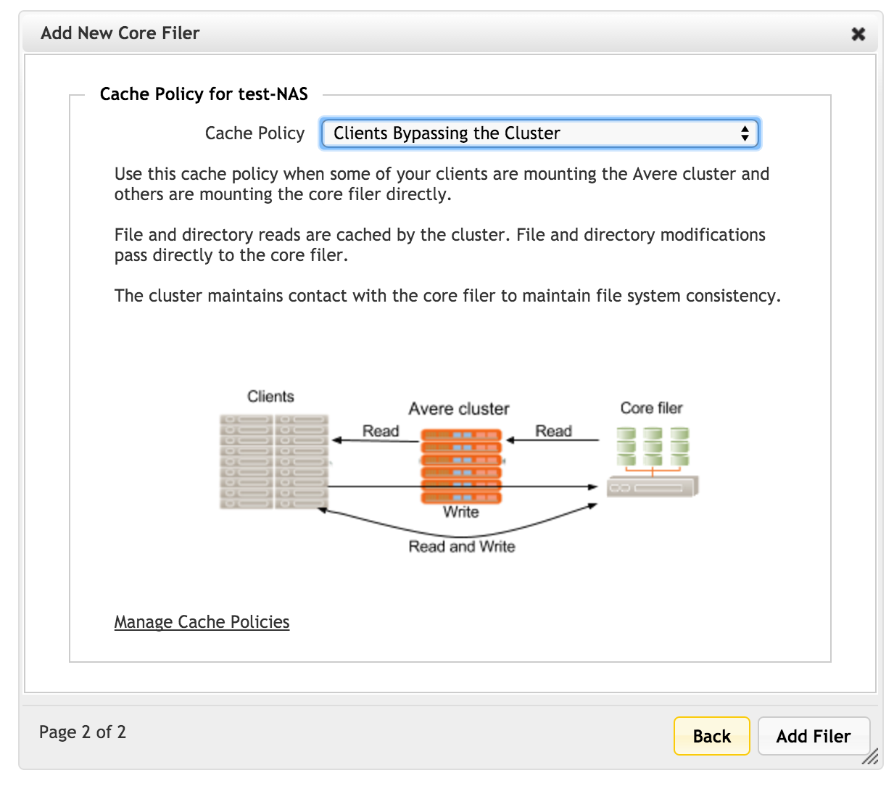

Adding a New Core Filer - NAS Core Filer
This section walks through the process of adding a new core filer to your vserver. This section is customized for core filers that use NFS NAS devices as back-end storage; the process is different for a core filer that uses cloud storage. Read Adding a New Core Filer - Cloud Core Filer for details.
Prerequisites for Adding a New NAS Core Filer
Before starting to configure the core filer on the cluster, make sure you have the following information.
The fully qualified domain name of the core filer (for example, nas1.example.com).
Note that you must use the domain name instead of an IP address in order to access the core filer with SMB.
The Add New Core Filer wizard guides you through the steps to define a new storage volume. Start the wizard by clicking the Create label from the Manage Core Filer page.
New Core Filer Wizard
Start the New Core Filer wizard from the Core Filer > Manage Core Filers settings page.
The options are different for each type of core filer - select NAS to define an NFS-based hardware storage system.

Fill in the required fields:
Core filer name - Set the user-visible name for this core filer.
Core filer network name/IP - Enter the IP address, network name, or the fully qualified domain name of the core filer.
Note
Use the fully qualified domain name if this core filer will be accessed by Windows clients over SMB.
Filer class - Select the hardware type that corresponds to the back-end storage system, or choose Other if the type is not listed.
Important
The initial value in the Filer Class selector might not be the correct value for your NAS core filer. Be certain to check the value and set it appropriately. An incorrect filer class setting can cause problems with SMB access to the core filer.
Network - If your cluster has more than one network, select the network that this core filer will use to communicate with the cluster.
Click Add Filer to continue.
{kind=link}
On the second page of the wizard, choose the caching policy for this core filer.
Read Manage Cache Policies to learn more about customizing cache settings.
Click Add Filer again to create the new NAS core filer. The Avere Control Panel dashboard might display warnings during the creation process.